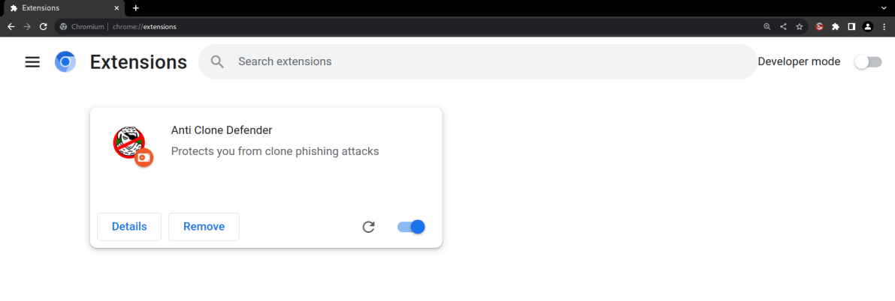
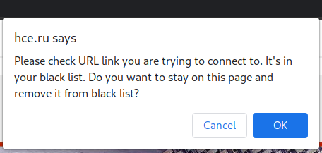
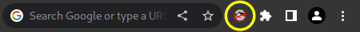
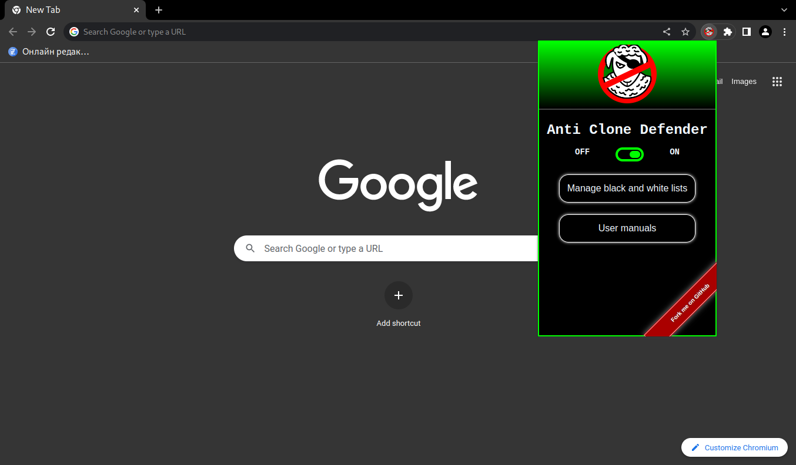

Обзор функционала
Расширение Anti Clone Defender призвано уберечь пользователя от попадания на фишинговый сайт-клон. Механизм работы расширения основан на сравнении ссылок с историей браузера, а также с белым и чёрным списками сайтов.
В случае, если ссылка, по которой хочет перейти пользователь, определяется, как опасная, загрузка страницы останавливается и появляется диалоговое окно, в котором требуется подтверждение от пользователя о его намерении перейти по ссылке. В зависимости от ответа пользователя, ссылка добавляется в чёрный или белый список. Наличие ссылки в белом списке говорит о том, что она безопасна для пользователя, и она более не проверяется. Наличие ссылки в чёрном списке подтверждает её опасность. Списки также могут изменяться вручную в окне управления списками.
Anti Clone Defender считает сайт подозрительным в случае, если его доменное имя отличается от доменного имени сайта-оригинала незначительно, так, что разница не заметна при быстром взгляде. В этом имени могут быть поменяны местами несколько букв, либо отсутствовать одна-две буквы и т.п.
Расширение уберегает пользователя от плачевных последствий невнимательности при переходе на сайт-клон, который может овладеть данными аутентификации пользователя и прочими приватными данными. Расширение действует на стороне пользователя и не зависит от того, насколько владелец сайта-оригинала защитил свой ресурс от сайтов-клонов.
Руководство по установке
Для работы расширения на компьютере должен быть установлен браузер на платформе Chromium (Google Chrome, Chromium, Microsoft Edge, Yandex.Браузер, Opera). Есть три способа инсталляции расширения в браузер: из магазина расширений браузера, из папки файлов исходного кода и с платформы GitHub. Из магазина расширений продукт ставится стандартным образом, как и любое другое расширение.
Для разработчиков исходный код расширения доступен на платформе GitHub по ссылке github.com/ArtyzhStudio/acd.
Вот как ставится расширение из папки с исходным кодом в разных браузерах:
-
Yandex.Браузер: чтобы установить расширение из папки, нужно открыть страницу расширений (
 →
Дополнения). Далее,
достаточно открыть стандартный менеджер файлов и перетащить разархивированную папку с расширением в
окно браузера.
Расширение подключится и начнёт работу.
→
Дополнения). Далее,
достаточно открыть стандартный менеджер файлов и перетащить разархивированную папку с расширением в
окно браузера.
Расширение подключится и начнёт работу.
-
Google Chrome/Chromium: имея папку с кодом, установить расширение можно, зайдя на страницу
расширений (
 →
Дополнительные
инструменты → Расширения). Далее нужно активировать «Режим разработчика» в верхнем правом углу.
Появляется кнопка
«Загрузить распакованное» в верхнем левом углу страницы. Нажав её, нужно выбрать папку расширения и
нажать «Открыть».
Расширение вступило в работу.
→
Дополнительные
инструменты → Расширения). Далее нужно активировать «Режим разработчика» в верхнем правом углу.
Появляется кнопка
«Загрузить распакованное» в верхнем левом углу страницы. Нажав её, нужно выбрать папку расширения и
нажать «Открыть».
Расширение вступило в работу.
-
Opera: необходимо перейти на страницу расширений (
 → Расширения → Расширения). Активировав «Режим
разработчика» в правом
верхнем углу, нужно нажать кнопку «Загрузить распакованное расширение» и выбрать разархивированную
папку с расширением
при помощи системного менеджера файлов.
→ Расширения → Расширения). Активировав «Режим
разработчика» в правом
верхнем углу, нужно нажать кнопку «Загрузить распакованное расширение» и выбрать разархивированную
папку с расширением
при помощи системного менеджера файлов.
-
Microsoft Edge: чтобы установить расширение из папки, требуется перейти к расширениям (
 → Расширения
→ Управление
расширениями). Теперь нужно нажать на «Загрузить распакованное» и выбрать папку с расширением. После
подтверждения
выбора расширение, начнёт работать.
→ Расширения
→ Управление
расширениями). Теперь нужно нажать на «Загрузить распакованное» и выбрать папку с расширением. После
подтверждения
выбора расширение, начнёт работать.
После установки, в окне расширений браузера появляется окно с кнопками для настройки работы расширения. По кнопке «Cведения» можно просмотреть такие данные, как версия продукта, объём занимаемой памяти, источник установки. Разрешение на доступ к сайтам для корректной работы расширения менять не рекомендуется, по умолчанию – «на всех сайтах». Кнопка «Удалить» позволяет удалить расширение, если отпала необходимость в его работе. И, наконец, самая правая кнопка позволяет включить или выключить работу продукта. При включённом состоянии, расширение работает фоново и отслеживает каждое обновление вкладок браузера.
Инструкция пользователя
Для взаимодействия с пользователем созданы несколько окон интерфейсов. В случае, если ссылка, по которой хочет перейти пользователь, определяется как опасная, загрузка страницы останавливается, и появляется диалоговое окно, в котором требуется подтверждение от пользователя о его намерении перейти по ссылке. В выводимом сообщении приводится URL похожего по написанию сайта, который пользователь посещал ранее.

Если пользователь не согласен с рекомендуемой блокировкой доступа к сайту, следует нажать кнопку подтверждения. После чего, cайт открывается, а доменное имя добавляется в белый список. Наличие имени в белом списке говорит о том, что ссылка безопасна для пользователя, и она более не проверяется. Нажатие кнопки отмены приведет к закрытию сайта и добавлению доменного имени в чёрный список. Наличие его в чёрном списке подтверждает опасность ссылки. В случае попытки зайти на сайт, присутствующий в чёрном списке, появляется второе окно–предупреждение:
В этом случае, аналогично предыдущему, нажатие кнопки подтверждения приведет к игнорированию предупреждения, сайт откроется, доменное имя ссылки удалится из чёрного списка и внесётся в белый список.
Следующее окно интерфейса взаимодействия программы с пользователем появляется при нажатии на иконку программы Anti Clone Defender в меню браузера, расположенного справа от адресной строки:
Это окно быстрого доступа:
Кнопка «OFF/ON» позволяет включить или выключить работу расширения. Кнопка «Manage black and white lists» - переход в окно управления белым и чёрным списками доменных имён. Кнопка «User manuals» позволяет открыть инструкцию по эксплуатации. Окно управления белым и чёрным списками выглядит следующим образом:

Используя это окно, пользователь может, во-первых, наблюдать созданные автоматически списки допустимых и недопустимых ссылок на сайты, во-вторых, вручную редактировать данные списки в случае имеющейся дополнительной информации о существующих вредоносных сайтах или о сайтах, которые не нужно проверять.
Чтобы добавить доменное имя в любой из списков необходимо вписать его в поле ввода соответсвующего списка и нажать клавишу "Enter" или кнопку "+". Для удаления доменного имени требуется нажать соотетсвующую кнопку "×" справа от него.
Примеры использования:
- Допустим, ваш обычный сайт для формирования заказов - park15logistics.com. В почтовой переписке вам приходит выгодное предложение, срок которого истекает в ближайшее время и предлагается немедленно оформить его. Тут же приводится ссылка на сайт a15logistics.nl. При быстром взгляде вы отчетливо видите название привычной фирмы «15Logistics» (данный сайт реально существовал и находится в архиве удаленных фишинговых сайтов). Но при попытке зайти на сайт загрузка страницы останавливается и появляется диалоговое окно с предупреждением. Прочитав сообщение, вы понимаете, что обычно вы пользовались для связи с данной фирмой другим сайтом. Вам достаточно нажать кнопку отмены и вредоносный сайт не загрузится и попадёт в чёрный список.
- Вы являетесь посетителем сайта hse.ru, при переходе на сайт hce.ru вы получаете предупреждение. При нажатии на кнопку подтверждения сайт открывается и помещается в белый список. Впоследствии его проверка осуществляться не будет.
- Ваш сотрудник попал на фишинговый сайт. Вы заходите в окно управления списками и вносите в чёрный список ссылку на этот вредоносный сайт. Случайное попадание на этот сайт для вас исключено.
Лицензия распространения
Anti Clone Defender распространяется под лицензией свободного программного обеспечения с открытым исходным кодом MIT. Вот текст этой лицензии:
MIT License Copyright (c) 2023 Artyzh Studio™ Permission is hereby granted, free of charge, to any person obtaining a copy of this software and associated documentation files (the "Software"), to deal in the Software without restriction, including without limitation the rights to use, copy, modify, merge, publish, distribute, sublicense, and/or sell copies of the Software, and to permit persons to whom the Software is furnished to do so, subject to the following conditions: The above copyright notice and this permission notice shall be included in all copies or substantial portions of the Software. THE SOFTWARE IS PROVIDED "AS IS", WITHOUT WARRANTY OF ANY KIND, EXPRESS OR IMPLIED, INCLUDING BUT NOT LIMITED TO THE WARRANTIES OF MERCHANTABILITY, FITNESS FOR A PARTICULAR PURPOSE AND NONINFRINGEMENT. IN NO EVENT SHALL THE AUTHORS OR COPYRIGHT HOLDERS BE LIABLE FOR ANY CLAIM, DAMAGES OR OTHER LIABILITY, WHETHER IN AN ACTION OF CONTRACT, TORT OR OTHERWISE, ARISING FROM, OUT OF OR IN CONNECTION WITH THE SOFTWARE OR THE USE OR OTHER DEALINGS IN THE SOFTWARE.